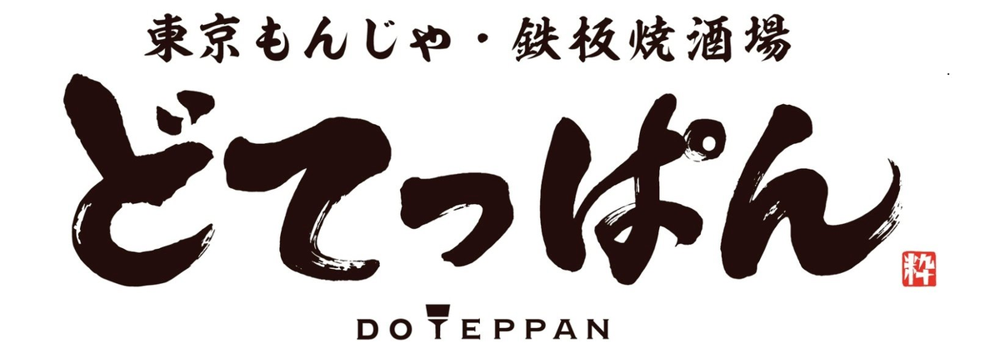
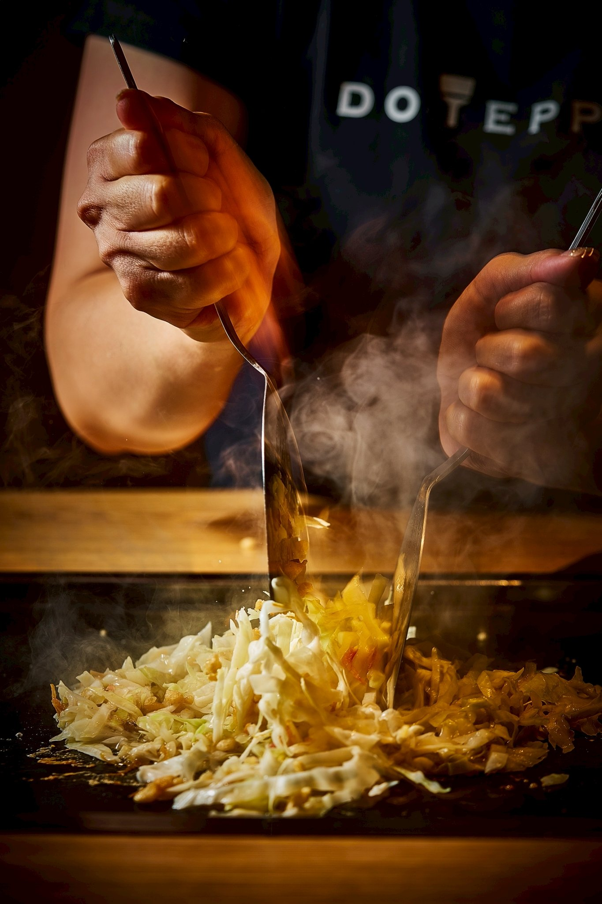
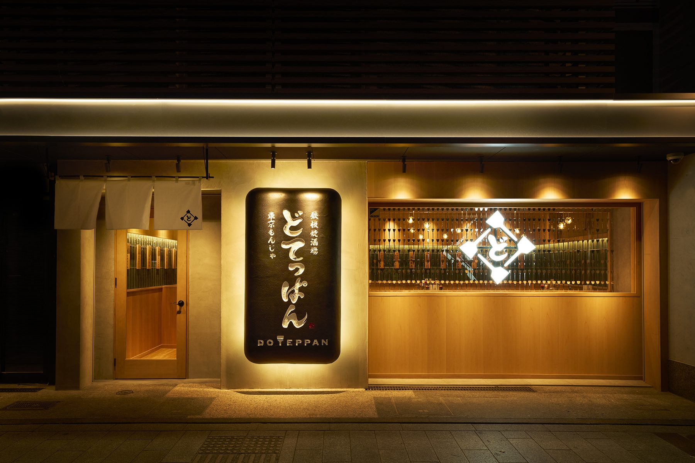
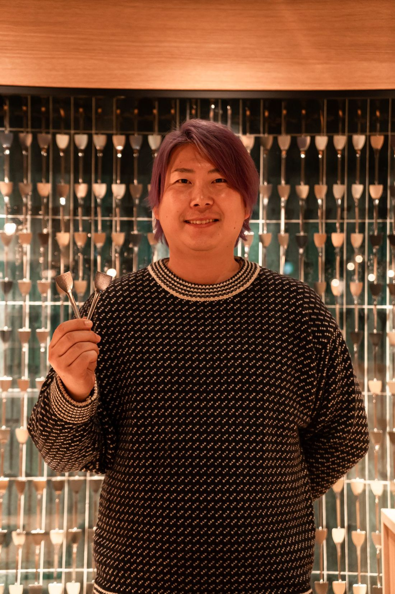
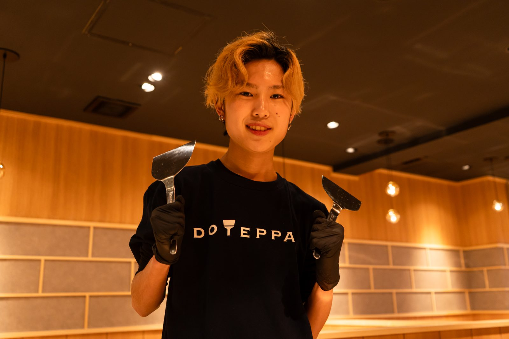
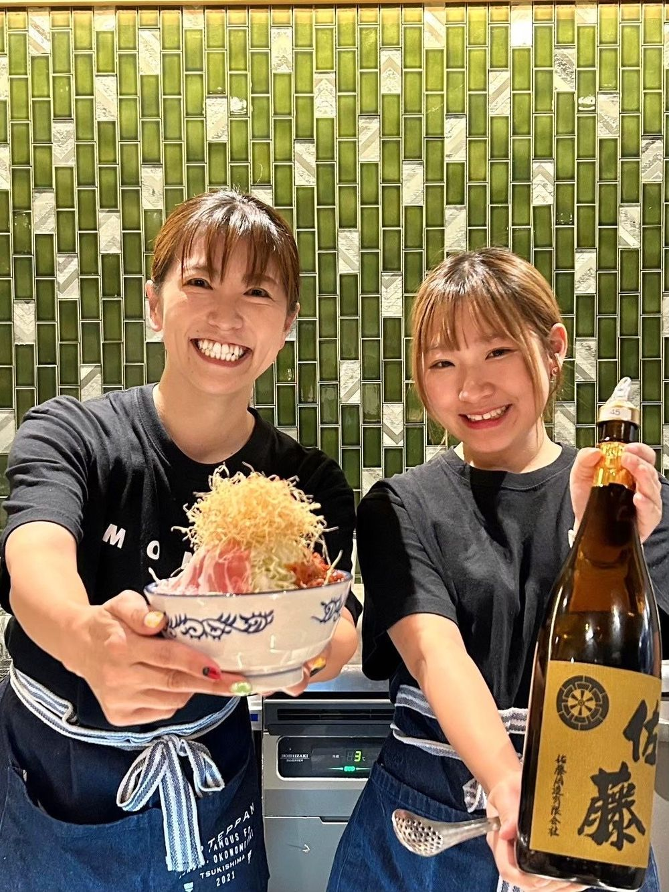
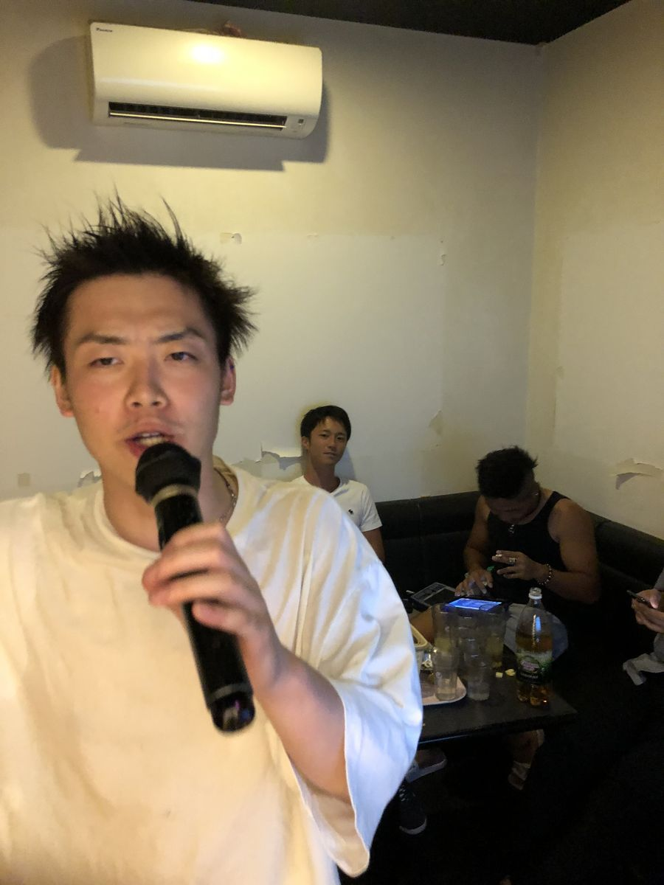

NO. 0101
はじめは、
誰にも知られない
お店でした。
誰にも知られない
お店でした。
At first, we were just one small shop
no one knew.
no one knew.



こうした地道な歩みを、
一杯ずつ・一枚ずつ積み重ねてきました。
これからも、人の力で、
もんじゃを日本一のブランドへ。
うちの一番の強みは、
ここで働く人たちです。
求人票では伝わらない、
リアルな声を聞いてください。

関西の大手ガス会社で13年間、施工管理エンジニアとして働いてきました。一級資格を複数持ち、現場のすべてを知り尽くした自負もあった。でも、ある日ふと思ったんです。「このままでいいのか」と。
転職のきっかけは何でしたか？
同級生からの一本の連絡でした。「うちで一緒にやらないか」と。最初は「飲食店？自分に何ができるんだろう」と戸惑いました。でも、話を聞いて気づいたんです。エンジニアとして現場を回してきた力は、店舗開発でも、FC加盟店のオーナー対応でも、必ず活きると。
いまの仕事の面白さは？
香港、タイ、韓国 ── 海外マスターFCの交渉も、立地スカウティングも、すべてが「ゼロから道をつくる」仕事です。エンジニア時代に培った段取り力と、人と向き合う粘り強さ。両方を活かせる場所が、ここにありました。

もともとはホテルのソムリエでした。ワインの世界に長くいて、「食」というものに、自分なりの美学を持っていたつもりです。
なぜ、もんじゃの世界へ？
あるとき、どてっぱんに食べに来たんです。鉄板の上で焼き上がっていくもんじゃを見て、お客様の顔が変わっていく瞬間を見て ──「ああ、これは“食”じゃなくて“体験”なんだ」と気づいた。ワインを注ぐ瞬間と、ヘラを動かす瞬間。やっていることの本質は、同じだと思ったんです。
「日本一」とは？
もんじゃという料理は、まだ誰も本気でブランドにしていない。寿司や天ぷらと並ぶ「日本を代表する料理」として、世界に届けられる余地が、ここにはあります。その挑戦の真ん中にいたい。だから、私は今ここにいます。

前職は看護師でした。誰かを支えること、寄り添うこと、それが仕事の核だと思って働いてきました。
業界が違いすぎませんか？
正直、最初はそう思いました。でも、入ってみてわかったんです。お客様一人ひとりの「今日は何があったのかな」「どんな話を聞いてほしいのかな」に寄り添うことは、看護の現場でやってきたことと、全く同じだったんです。
いま、店長として大切にしていることは？
スタッフ一人ひとりに、ちゃんと「いま、どう？」と声をかけること。これは病棟で学んだことです。お客様だけでなく、一緒に働く仲間こそ、一番大切な「人」だから。「人を何よりも大切にする」── このバリューが、私にはしっくりきました。
鉄板の前ではない、素の顔。
仲間と笑い、騒ぎ、ふざける。
そんな時間も、私たちの一部です。

広告でも資本でもなく、「人」で広げてきた5年間。
その実感を、数字でお見せします。
店舗運営とチームづくりを担い、ゆくゆくは店舗全体の責任者（チーフ）へ。マネジメントに挑戦したい方へ。
まずは現場の主力として。接客・調理を通じて「どてっぱんらしさ」を体現し、キャプテン・チーフへの道を歩めます。
| 雇用形態 | 正社員（中途） |
|---|---|
| 勤務地 | 各店舗（関東・関西・中部・北海道）。希望を考慮します。 |
| 給与 | 月給25万円〜（経験・役職により決定） |
| 選考フロー | カジュアル面談 → 面接 → 内定（3ステップ） |
| 福利厚生 | 社会保険完備 ／ 交通費全額支給 ／ 制服貸与 ／ 社員割引 ／ 昇給あり ／ 髪色・髪型自由 ／ ピアス・ネイルOK |
「人で勝つ」に挑む仲間を待っています。
カジュアル面談から、お気軽にどうぞ。